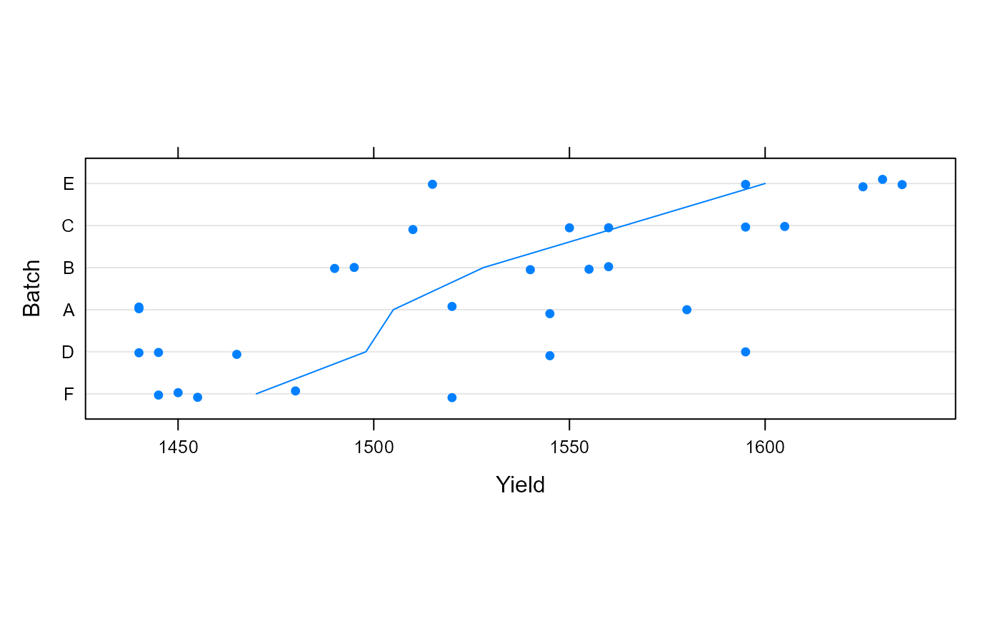
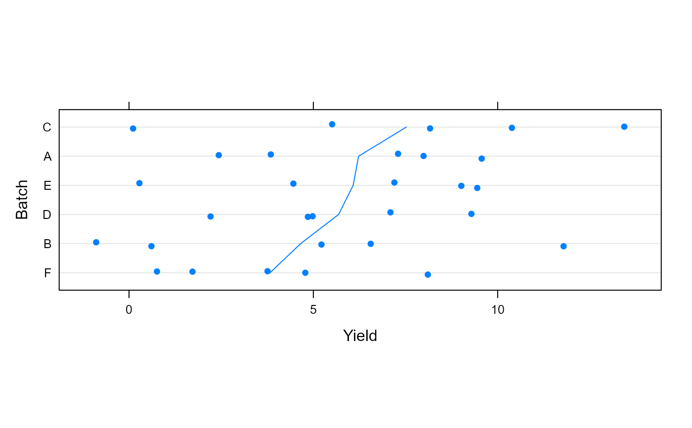

Yield of dyestuff by batch
Dyestuff.RdThe Dyestuff data frame provides the yield of
dyestuff (Naphthalene Black 12B) from 5 different
preparations from each of 6 different batchs of an
intermediate product (H-acid). The Dyestuff2 data
were generated data in the same structure but with a
large residual variance relative to the batch variance.
Format
Data frames, each with 30 observations on the following 2 variables.
Batcha factor indicating the batch of the intermediate product from which the preparation was created.
Yieldthe yield of dyestuff from the preparation (grams of standard color).
Source
O.L. Davies and P.L. Goldsmith (eds), Statistical Methods in Research and Production, 4th ed., Oliver and Boyd, (1972), section 6.4
G.E.P. Box and G.C. Tiao, Bayesian Inference in Statistical Analysis, Addison-Wesley, (1973), section 5.1.2
Details
The Dyestuff data are described in Davies and
Goldsmith (1972) as coming from “an investigation
to find out how much the variation from batch to batch in
the quality of an intermediate product (H-acid)
contributes to the variation in the yield of the dyestuff
(Naphthalene Black 12B) made from it. In the experiment
six samples of the intermediate, representing different
batches of works manufacture, were obtained, and five
preparations of the dyestuff were made in the laboratory
from each sample. The equivalent yield of each
preparation as grams of standard colour was determined by
dye-trial.”
The Dyestuff2 data are described in Box and Tiao
(1973) as illustrating “ the case where
between-batches mean square is less than the
within-batches mean square. These data had to be
constructed for although examples of this sort
undoubtably occur in practice, they seem to be rarely
published.”
Examples
# useful for the lme4-authors --- development, debugging, etc:
commandArgs()[-1]
#> [1] "--slave"
#> [2] "--no-save"
#> [3] "--no-restore"
#> [4] "-f"
#> [5] "C:\\Users\\alepi\\AppData\\Local\\Temp\\RtmpUXhDQ5\\callr-scr-514012146551"
if(FALSE) ## R environment variables:
local({ ne <- names(e <- Sys.getenv())
list(R = e[grep("^R", ne)],
"_R" = e[grep("^_R",ne)]) })
Sys.getenv("R_ENVIRON")
#> [1] ""
Sys.getenv("R_PROFILE")
#> [1] ""
cat("R_LIBS:\n"); (RL <- strsplit(Sys.getenv("R_LIBS"), ":")[[1]])
#> R_LIBS:
#> character(0)
nRL <- normalizePath(RL)
cat("and extra(:= not in R_LIBS) .libPaths():\n")
#> and extra(:= not in R_LIBS) .libPaths():
.libPaths()[is.na(match(.libPaths(), nRL))]
#> [1] "C:/Users/alepi/AppData/Local/Temp/RtmpUXhDQ5/temp_libpath5140467e7c26"
#> [2] "C:/Users/alepi/AppData/Local/R/win-library/4.2"
#> [3] "C:/Program Files/R/R-4.2.2/library"
structure(Sys.info()[c(4,5,1:3)], class="simple.list") #-> 'nodename' ..
#> _
#> nodename DESKTOP-6INJJTT
#> machine x86-64
#> sysname Windows
#> release 10 x64
#> version build 22621
sessionInfo()
#> R version 4.2.2 (2022-10-31 ucrt)
#> Platform: x86_64-w64-mingw32/x64 (64-bit)
#> Running under: Windows 10 x64 (build 22621)
#>
#> Matrix products: default
#>
#> locale:
#> [1] LC_COLLATE=C
#> [2] LC_CTYPE=English_United States.utf8
#> [3] LC_MONETARY=English_United States.utf8
#> [4] LC_NUMERIC=C
#> [5] LC_TIME=English_United States.utf8
#>
#> attached base packages:
#> [1] stats graphics grDevices utils datasets methods base
#>
#> other attached packages:
#> [1] pbkrtest_0.5.2 lattice_0.20-45 lme4_1.1-31 Matrix_1.5-1
#>
#> loaded via a namespace (and not attached):
#> [1] Rcpp_1.0.10 tidyr_1.3.0 prettyunits_1.1.1
#> [4] ps_1.7.2 rprojroot_2.0.3 digest_0.6.31
#> [7] utf8_1.2.3 mime_0.12 R6_2.5.1
#> [10] backports_1.4.1 evaluate_0.20 httr_1.4.4
#> [13] pillar_1.9.0 rlang_1.1.2 curl_5.1.0
#> [16] rstudioapi_0.14 minqa_1.2.5 miniUI_0.1.1.1
#> [19] whisker_0.4.1 callr_3.7.3 nloptr_2.0.3
#> [22] jquerylib_0.1.4 urlchecker_1.0.1 rmarkdown_2.20
#> [25] pkgdown_2.0.7 textshaping_0.3.7 desc_1.4.2
#> [28] devtools_2.4.5 splines_4.2.2 stringr_1.5.0
#> [31] htmlwidgets_1.6.3 broom_1.0.5 shiny_1.7.4
#> [34] numDeriv_2016.8-1.1 compiler_4.2.2 httpuv_1.6.9
#> [37] xfun_0.37 pkgconfig_2.0.3 systemfonts_1.0.5
#> [40] pkgbuild_1.4.0 htmltools_0.5.7 tidyselect_1.2.0
#> [43] downlit_0.4.3 tibble_3.1.8 fansi_1.0.4
#> [46] dplyr_1.1.0 crayon_1.5.2 withr_2.5.0
#> [49] later_1.3.0 MASS_7.3-60 grid_4.2.2
#> [52] nlme_3.1-160 jsonlite_1.8.4 xtable_1.8-4
#> [55] lifecycle_1.0.3 magrittr_2.0.3 cli_3.6.0
#> [58] stringi_1.7.12 cachem_1.0.6 fs_1.6.1
#> [61] promises_1.2.0.1 remotes_2.4.2.1 xml2_1.3.3
#> [64] bslib_0.4.2 generics_0.1.3 ellipsis_0.3.2
#> [67] ragg_1.2.6 vctrs_0.6.4 boot_1.3-28
#> [70] tools_4.2.2 glue_1.6.2 purrr_1.0.1
#> [73] parallel_4.2.2 processx_3.8.0 pkgload_1.3.2
#> [76] fastmap_1.1.0 yaml_2.3.7 sessioninfo_1.2.2
#> [79] memoise_2.0.1 knitr_1.42 profvis_0.3.8
#> [82] sass_0.4.5 usethis_2.2.2
searchpaths()
#> [1] ".GlobalEnv"
#> [2] "C:/Users/alepi/AppData/Local/R/win-library/4.2/pbkrtest"
#> [3] "C:/Program Files/R/R-4.2.2/library/lattice"
#> [4] "C:/Users/alepi/AppData/Local/R/win-library/4.2/lme4"
#> [5] "C:/Program Files/R/R-4.2.2/library/Matrix"
#> [6] "C:/Program Files/R/R-4.2.2/library/stats"
#> [7] "C:/Program Files/R/R-4.2.2/library/graphics"
#> [8] "C:/Program Files/R/R-4.2.2/library/grDevices"
#> [9] "C:/Program Files/R/R-4.2.2/library/utils"
#> [10] "C:/Program Files/R/R-4.2.2/library/datasets"
#> [11] "C:/Program Files/R/R-4.2.2/library/methods"
#> [12] "Autoloads"
#> [13] "tools:callr"
#> [14] "C:/PROGRA~1/R/R-42~1.2/library/base"
pkgI <- function(pkgname) {
pd <- tryCatch(packageDescription(pkgname),
error=function(e)e, warning=function(w)w)
if(inherits(pd, "error") || inherits(pd, "warning"))
cat(sprintf("packageDescription(\"%s\") %s: %s\n",
pkgname, class(pd)[2], pd$message))
else
cat(sprintf("%s -- built: %s\n%*s -- dir : %s\n",
pkgname, pd$Built, nchar(pkgname), "",
dirname(dirname(attr(pd, "file")))))
}
pkgI("Matrix")
#> Matrix -- built: R 4.2.2; x86_64-w64-mingw32; 2022-10-31 14:42:07 UTC; windows
#> -- dir : C:/Program Files/R/R-4.2.2/library/Matrix
pkgI("Rcpp")
#> Rcpp -- built: R 4.2.2; x86_64-w64-mingw32; 2023-01-29 01:57:51 UTC; windows
#> -- dir : C:/Users/alepi/AppData/Local/R/win-library/4.2/Rcpp
## 2012-03-12{MM}: fails with --as-cran
pkgI("RcppEigen")
#> RcppEigen -- built: R 4.2.2; x86_64-w64-mingw32; 2023-02-12 04:07:57 UTC; windows
#> -- dir : C:/Users/alepi/AppData/Local/R/win-library/4.2/RcppEigen
pkgI("minqa")
#> minqa -- built: R 4.2.2; x86_64-w64-mingw32; 2023-02-12 03:35:23 UTC; windows
#> -- dir : C:/Users/alepi/AppData/Local/R/win-library/4.2/minqa
pkgI("lme4")
#> lme4 -- built: R 4.2.2; x86_64-w64-mingw32; 2023-02-12 07:31:36 UTC; windows
#> -- dir : C:/Users/alepi/AppData/Local/R/win-library/4.2/lme4
require(lattice)
str(Dyestuff)
#> 'data.frame': 30 obs. of 2 variables:
#> $ Batch: Factor w/ 6 levels "A","B","C","D",..: 1 1 1 1 1 2 2 2 2 2 ...
#> $ Yield: num 1545 1440 1440 1520 1580 ...
dotplot(reorder(Batch, Yield) ~ Yield, Dyestuff,
ylab = "Batch", jitter.y = TRUE, aspect = 0.3,
type = c("p", "a"))

dotplot(reorder(Batch, Yield) ~ Yield, Dyestuff2,
ylab = "Batch", jitter.y = TRUE, aspect = 0.3,
type = c("p", "a"))

(fm1 <- lmer(Yield ~ 1|Batch, Dyestuff))
#> Linear mixed model fit by REML ['lmerMod']
#> Formula: Yield ~ 1 | Batch
#> Data: Dyestuff
#> REML criterion at convergence: 319.6543
#> Random effects:
#> Groups Name Std.Dev.
#> Batch (Intercept) 42.00
#> Residual 49.51
#> Number of obs: 30, groups: Batch, 6
#> Fixed Effects:
#> (Intercept)
#> 1528
(fm2 <- lmer(Yield ~ 1|Batch, Dyestuff2))
#> boundary (singular) fit: see help('isSingular')
#> Linear mixed model fit by REML ['lmerMod']
#> Formula: Yield ~ 1 | Batch
#> Data: Dyestuff2
#> REML criterion at convergence: 161.8283
#> Random effects:
#> Groups Name Std.Dev.
#> Batch (Intercept) 0.000
#> Residual 3.716
#> Number of obs: 30, groups: Batch, 6
#> Fixed Effects:
#> (Intercept)
#> 5.666
#> optimizer (nloptwrap) convergence code: 0 (OK) ; 0 optimizer warnings; 1 lme4 warnings